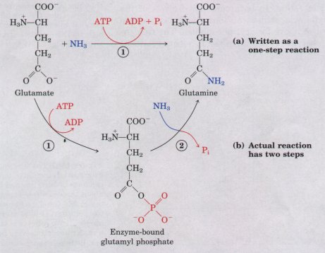
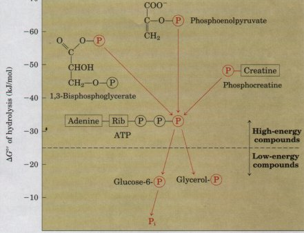
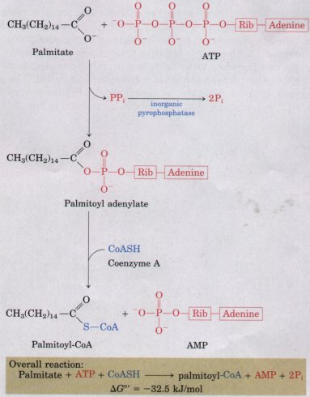
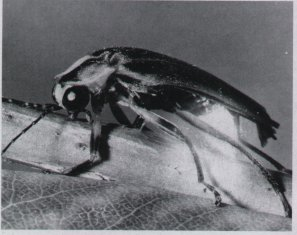
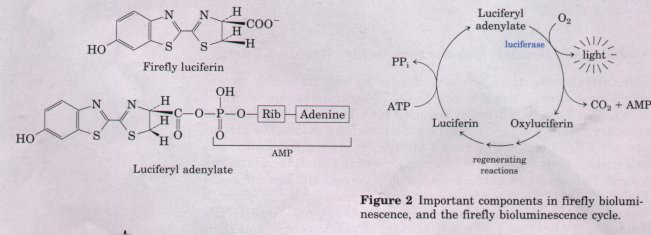
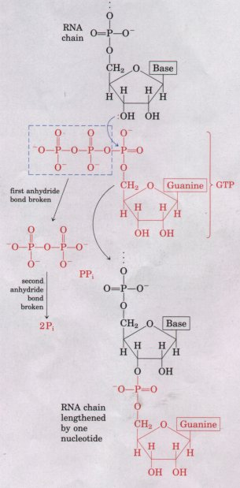
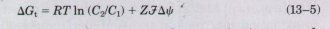
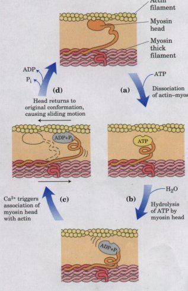

| Throughout this book we will refer to reactions or processes for which ATP supplies energy, and the contribution of ATP to these reactions will commonly be indicated as in Figure 13-8a, with a single arrow showing the conversion of ATP into ADP and Pi, or of ATP into AMP and PPi (pyrophosphate). When written this way, these reactions of ATP appear to be simple hydrolysis reactions in which water displaces either Pi or PPi, and one is tempted to say that an ATP-dependent reaction is "driven by the hydrolysis of ATP." This is not the case. ATP hydrolysis per se usually accomplishes nothing but the liberation of heat, which cannot drive a chemical process in an isothermal system. |  Figure 13-8 The contribution of ATP to a reaction is often shown with a single arrow (a), but is almost always a two-step process, such as that shown here for the reaction catalyzed by ATP-dependent glutamine synthetase (b). |
Single reaction arrows such as those in Figure 13-8a almost invariably represent two-step processes (Fig. 13-8b) in which part of the ATP molecule, either a phosphoryl group or the adenylate moiety (AMP), is first transferred to a substrate molecule or to an amino acid residue in an enzyme, becoming covalently attached to and raising the free-energy content of the substrate or enzyme. In the second step, the phosphate-containing moiety transferred in the first step is displaced, generating either Pi or AMP. Thus ATP participates in the enzymecatalyzed reaction to which it contributes free energy. There is one important class of exceptions to this generalization: those processes in which noncovalent binding of ATP (or of GTP), followed by its hydrolysis to ADP and Pi, provides the energy to cycle a protein between two conformations, producing mechanical motion, as in muscle contraction or in the movement of enzymes along DNA (discussed below).
| The phosphate compounds found in living
organisms can be divided arbitrarily into two groups,
based on their standard free energies of hydrolysis (Fig.
13-9). "High-energy" compounds have a ΔG°' of
hydrolysis more negative than -25 kJ/mol;
"low-energy" compounds have a less negative
ΔG°' ATP, for which ΔG°' of hydrolysis is -30.5 kJ/mol
(-7.3 kcal/mol), is a high-energy compound;
glucose-6-phosphate, with a standard free energy of
hydrolysis of -13.8 kJ/mol (-3.3 kcal/mol), is a
low-energy compound. The term "high-energy phosphate bond," although long used by biochemists, is incorrect and misleading, as it wrongly suggests that the bond itself contains the energy. In fact, the breaking of chemical bonds requires an input of energy. The free energy released by hydrolysis of phosphate compounds thus does not come from the specific bond that is broken but results from the products of the reaction having a smaller free-energy content than the reactants. For simplicity, we will sometimes use the term "high-energy phosphate compound" when referring to ATP or other phosphate compounds with a large, negative, standard free energy of hydrolysis. |
 Figure 13-9 Flow of phosphate groups, represented by (P) from high-energy phosphate donors via ATP to acceptor molecules (such as glucose and glycerol) to form their low-energy phosphate derivatives. This flow of phosphate groups, which is catalyzed by enzymes called kinases, proceeds with an overall loss of free energy under intracellular conditions. Hydrolysis of low-energy phosphate compounds releases Pi, which has an even lower group transfer potential. |
From the additivity of free-energy changes of sequential reactions, one can see that the synthesis of any phosphorylated compound can be accomplished by coupling it to the breakdown of another phosphorylated compound with a more negative free energy of hydrolysis (Fig. 13-9). One can therefore describe phosphorylated compounds as having a high or low phosphate group transfer potential. The phosphate group transfer potential of phosphoenolpyruvate is very high, that of ATP is high, and that of glucose-6-phosphate is low.
| Much of catabolism is directed toward
the synthesis of high-energy phosphate compounds, but
their formation is not an end in itself; it is the means
of activating a very wide variety of compounds for
further chemical transformation. The transfer of a
phosphoryl group to a compound effectively puts free
energy into that compound, so that it has more free
energy to give up during subsequent metabolic
transformations. We described above how the synthesis of
glucose-6-phosphate is accomplished by phosphoryl group
transfer from ATP. We shall see in the next chapter that
this phosphorylation of glucose activates or
"primes" the glucose for catabolic reactions
that occur in nearly every living cell. In some reactions that involve ATP, both of its terminal phosphate groups are released in one piece as PPi. Simultaneously, the remainder of the ATP molecule (adenylate) is joined to another compound, which is thereby activated. For example, the first step in the activation of a fatty acid either for energy-yielding oxidation (Chapter 16) or for use in the synthesis of more complex lipids (Chapter 20) is its attachment to the carrier coenzyme A (Fig. 13-10). The direct condensation of a fatty acid with coenzyme A is endergonic, but the formation of fatty acylCoA is made exergonic by coupling it to the net breakdown, in two steps, of ATP. |
 Figure 13-10 Both phosphoric acid anhydride bonds in ATP are eventually broken in the formation of palmitoyl-coenzyme A. In the first step of the reaction, ATP donates adenylate (AMP), forming the fatty acyl adenylate and releasing PPi. The pyrophosphate is subsequently hydrolyzed by inorganic pyrophosphatase. The "energized" fatty acyl group is then transferred to coenzyme A. |
In the first step, adenylate (AMP) is transferred from ATP to
the carboxyl group of the fatty acid, forming a mixed anhydride
(fatty acyl adenylate) and liberating PPi. In the second step,
the thiol group of coenzyme A displaces the adenylate group and
forms a thioester with the fatty acid. The sum of these two
reactions is the exergonic hydrolysis of ATP to AMP and PPi (ΔG°'
= -32.2 kJ/mol) and the endergonic formation of fatty acyl-CoA
(ΔG°' = 31.4 kJ/mol).
The formation of fatty acyl-CoA is made energetically favorable
by a third step, in which the PPi formed in the first step is
hydrolyzed by the ubiquitous enzyme inorganic pyrophosphatase to
yield 2Pi:
PPi + H2O  2Pi ΔG°' = -33.4 kJ/mol
2Pi ΔG°' = -33.4 kJ/mol
Thus, in the activation of a fatty acid, both of the phosphoric acid anhydride bonds of ATP are broken. The resulting ΔG°' is the sum of the ΔG°' values for the breakage of these bonds:
ATP + H2O AMP + 2Pi ΔG°' = -65.6 kJ/mol
The activation of amino acids before their polymerization into proteins (Chapter 26) is accomplished by an analogous set of reactions. An aminoacyl adenylate is first formed from the amino acid and ATP, with the elimination of PPi. The adenylate group is then displaced by a transfer RNA, which is thereby joined to the amino acid. In this case, too, the PPi formed in the first step is hydrolyzed by inorganic pyrophosphatase. An unusual use of the cleavage of ATP to AMP and PPi occurs in the firefly, which uses ATP as an energy source to produce light flashes (Box 13-3, p. 382).
|
BOX 13-3 Firefly Flashes: Glowing Reports of ATP Figure 1 The firefly, a beetle of the Lampyridae family.Many fungi, marine microorganisms, jellyfish, and crustaceans as well as the firefly (Fig. 1) are capable of generating bioluminescence, which requires considerable amounts of energy. In the firefly, ATP is used in a set of reactions that converts chemical energy into light energy. From many thousands of firefly lanterns collected by children in and around Baltimore, William McElroy and his colleagues at The Johns Hopkins University isolated the principal biochemical components involved, luciferin (Fig. 2), a complex carboxylic acid, and luciferase, an enzyme. The generation of a light flash requires activation of luciferin by an enzymatic reaction with ATP in which a pyrophosphate cleavage of ATP occurs, to form luciferyl adenylate (Fig. 2). This compound is then acted upon by molecular oxygen and luciferase to bring about the oxidative decarboxylation of the luciferin to yield oxylucif erin. This reaction, which has intermediate steps, is accompanied by emission of light (Fig. 2). The color of the light flash differs with firefly species and appears to be determined by differences in the structure of the luciferase. Luciferin is then regenerated from oxyluciferin in a subsequent series of reactions. Other bioluminescent organisms use other types of enzymatic reactions to generate light. In the laboratory, pure firefly luciferin and luciferase are used to measure minute quantities of ATP by the intensity of the light flash produced. As little as a few picomoles (10-12 mol) of ATP can be measured in this way.  Figure 2 Important components in irefly bioluminescence, and the firefly bioluminescence cycle. |
The AMP produced in adenylate transfers
is returned to the ATP cycle by the action of adenylate
kinase, which catalyzes the reversible reaction
The ADP so formed can be phosphorylated to ATP, using reactions described in detail in later chapters. Assembly of Informational Macromolecules Requires EnergyWhen simple precursors are assembled into high molecular weight polymers with defined sequences (DNA, RNA, proteins), as described in detail in Part IV, energy is required both for the condensation of monomeric units and for the creation of ordered sequences. The precursors for DNA and RNA synthesis are nucleoside triphosphates, and polymerization is accompanied by cleavage of the phosphoric acid anhydride linkage between the α- and β-phosphates, with the release of PPi (Fig. 13-11). The moieties transferred to the growing polymer in these polymerization reactions are adenylate (AMP), guanylate (GMP), cytidylate (CMP), or uridylate (UMP) for RNA synthesis, and their deoxy analogs for DNA synthesis. We have seen that the activation of amino acids for protein synthesis involves the donation of adenylate groups from ATP, and we shall see later that the formation of peptide bonds on the ribosome is also accompanied by GTP hydrolysis (Chapter 26). In all of these cases, the exergonic breakdown of a nucleoside triphosphate is coupled to the endergonic process of synthesizing a polymer of a specific sequence. |
 Figure 13-11 Nucleoside triphosphates are the substrates for RNA synthesis. With each nucleoside monophosphate added to the growing chain, one PP; is released and then hydrolyzed to two P;. The hydrolysis of two phosphoric acid anhydride bonds for each nucleotide added provides energy for forming the bonds in the RNA polymer and for assembling a specific sequence of nucleotides. |
ATP can supply the energy for transporting an ion or a molecule across a membrane into another aqueous compartment where its concentration is higher. Recall from Chapter 10 that the free-energy change (ΔGt) for the transport of a nonionic solute from one compartment to another is given by
ΔGt=RT ln(C2/C1).....................(13-4)
where C1 is the molar concentration of the solute in the compartment from which the ion or molecule moves and C2 is its molar concentration in the compartment into which it moves. When a proton or other charged species moves across a membrane without a counterion, the separation of electrical charge requires extra electrical work beyond the osmotic work against a concentration gradient. The extra electrical work is ZFΔψ, where Z is the (unitless) electrical charge of the transported species, Δψ is the transmembrane electrical potential (in volts), and F is the Faraday constant (96.48 kJ/V•mol). The total energy cost of moving a charged species against an electrochemical gradient is

| Transport processes are major consumers
of energy; in tissues such as human kidney and brain, as
much as two-thirds of the energy consumed at rest is used
to pump Na+ and K+ across plasma membranes via the Na+K+
ATPase. Na+ and K+ transport is driven by cyclic
phosphorylation and dephosphorylation of the transporter
protein, with ATP as the phosphate donor (see Fig.
10-23). Na+-dependent phosphorylation of the Na+ K+
ATPase forces a change in the protein's conformation, and
K+-dependent dephosphorylation favors return to the
original conformation. Each cycle in the transport
process results in the conversion of ATP to ADP and Pi,
and it is the free-energy change of ATP hydrolysis that
drives the pumping of Na+ and K+. In animal cells, the
net hydrolysis of one ATP is accompanied by the outward
transport of three Na+ ions and the uptake of two K+
ions. ATP Is the Energy Source for Muscle Contraction In the contractile system of skeletal muscle cells, myosin and actin are specialized to transduce the chemical energy of ATP into motion. ATP binds tightly but noncovalently to the head portion of one conformation of myosin, holding the protein in that conformation. When myosin (which is also an ATPase) catalyzes the hydrolysis of its bound ATP, the ADP and Pi produced dissociate from the protein, allowing it to relax into a second conformation until another molecule of ATP binds (Fig. 13-12). The binding and subsequent hydrolysis of ATP thus provide the energy that forces cyclic changes in the conformation of the myosin head. The change in conformation of many individual myosin molecules results in the sliding of myosin fibrils along actin filaments (see Fig. 7-32), which translates into macroscopic contraction of the muscle fiber. This production of mechanical motion at the expense of ATP is one of the few cases in which ATP hydrolysis per se, and not group transfer from ATP, is the source of the chemical energy in a coupled process. The energy-dependent reactions catalyzed by helicases, RecA protein, and some topoisomerases (Chapter 24) and by certain GTP-binding proteins (Chapter 22) also involve direct hydrolysis of phosphoric acid anhydride bonds. |
 Figure 13-12 ATP hydrolysis drives the crossbridge cycle during the sliding motion of actinmyosin complexes in muscle. This proposed me~ nism begins with each myosin head bound to a actin filament. Binding of ATP to myosin (a) ca dissociation of the actin-myosin cross-bridge. A hydrolysis (b) leaves myosin with bound ADP a Pi, which favors a different conformation of the myosin head. In this conformation, the myosin binds to an adjacent actin filament (c) when el vated cytosolic Ca2+ signals contraction. This cross-bridge formation induces the release of bc ADP and Pi (d), which provides the free energy a conformational change in the myosin head; t1 head tilts, forcing the thin (actin) filament to s relative to the thick (myosin) flament, produci: contraction. ATP then binds to the myosin heai dissociate the cross-bridge and start another cy Each cycle occurs in about 1 msec. |